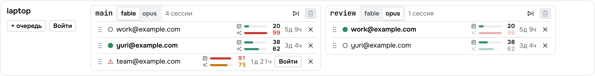
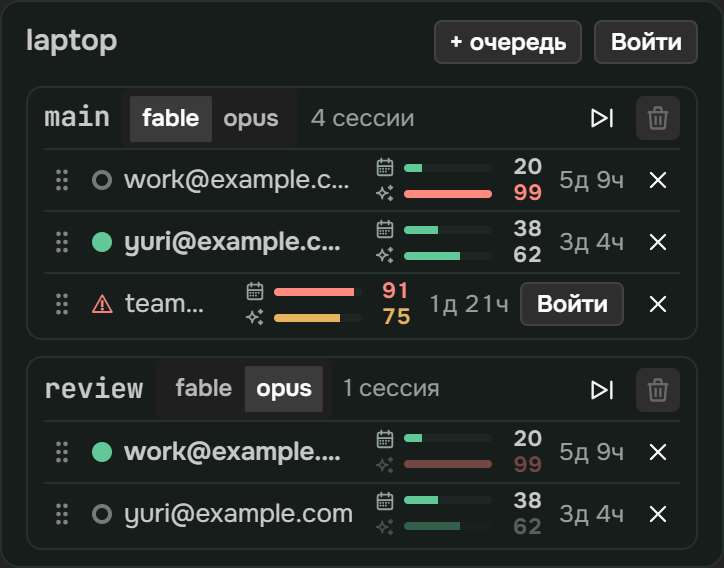
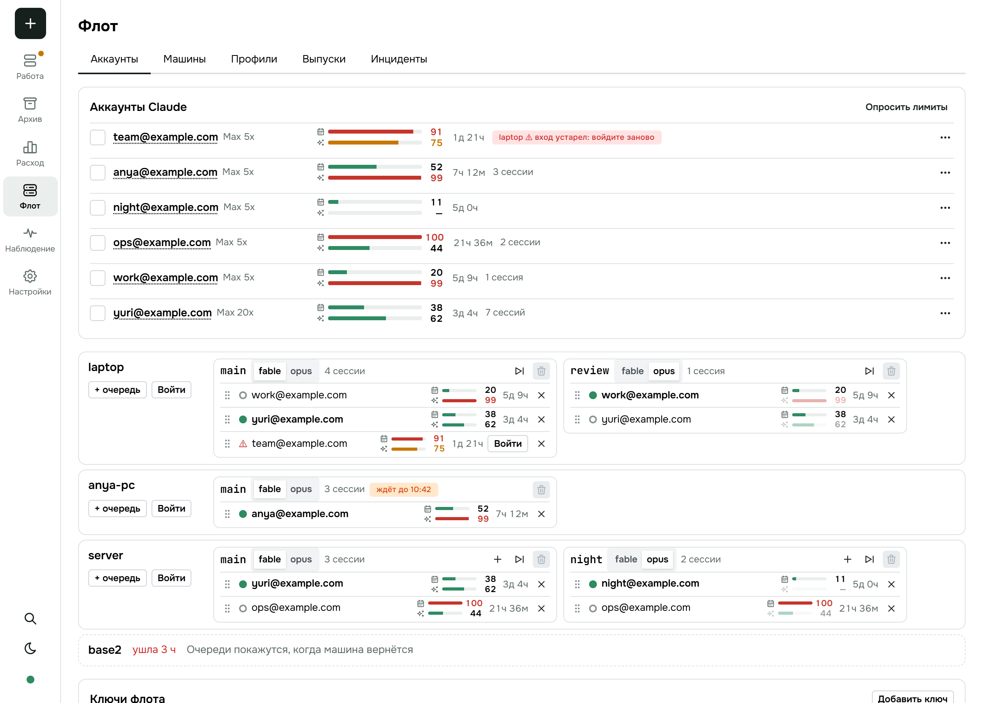
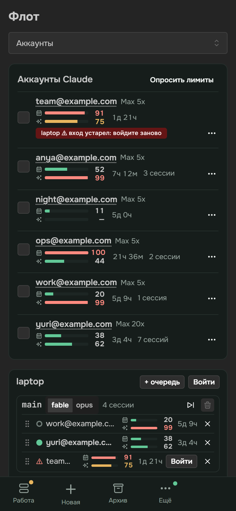
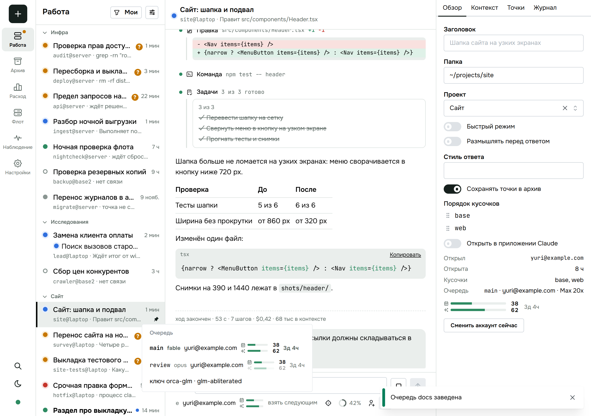
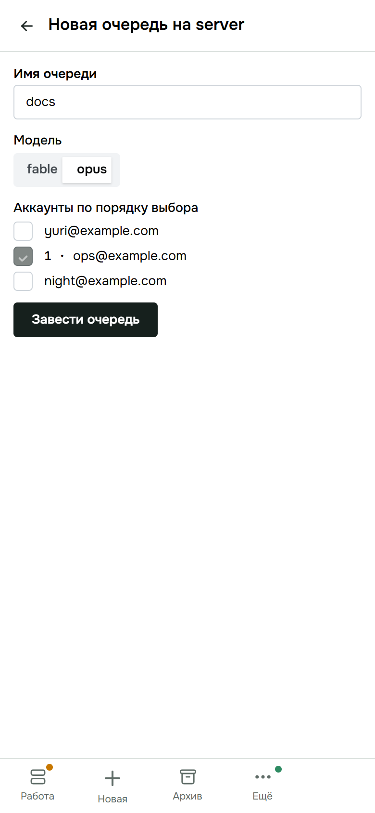

<title>Очереди по модели</title>
<meta name="claude:viewport-fit-sides" content="cover">
<link rel="stylesheet" href="https://fonts.googleapis.com/css2?family=Inter:wght@400;500;600&family=Space+Grotesk:wght@500;600&family=JetBrains+Mono:wght@400;500&display=swap">
<style>
:root {
  --bg: #f6f5f1; --card: #ffffff; --fg: #1c211f; --muted: #66706b; --line: #d9d8d0; --soft: #eceae3;
  --accent: #1f7a63; --accent-soft: #dcefe8; --new: #b8590f; --new-soft: #fbe9d7; --bad: #b3362b; --bad-soft: #f7e1de; --code: #f0eee7;
}
@media (prefers-color-scheme: dark) { :root:not([data-theme="light"]) {
  --bg: #151917; --card: #1d2320; --fg: #e8ece9; --muted: #98a39d; --line: #343c38; --soft: #252c28;
  --accent: #5fc3a6; --accent-soft: #1d3a31; --new: #f0a25c; --new-soft: #40291a; --bad: #ef8a80; --bad-soft: #43221f; --code: #232a26; color-scheme: dark } }
:root[data-theme="dark"] {
  --bg: #151917; --card: #1d2320; --fg: #e8ece9; --muted: #98a39d; --line: #343c38; --soft: #252c28;
  --accent: #5fc3a6; --accent-soft: #1d3a31; --new: #f0a25c; --new-soft: #40291a; --bad: #ef8a80; --bad-soft: #43221f; --code: #232a26; color-scheme: dark }
body { background: var(--bg); color: var(--fg); font: 15px/1.5 Inter, system-ui, sans-serif; padding-left: max(16px, env(safe-area-inset-left, 0px)); padding-right: max(16px, env(safe-area-inset-right, 0px)); padding-block: 28px 64px; }
main { max-width: 1040px; margin: 0 auto; display: flex; flex-direction: column; gap: 36px; }
h1, h2 { font-family: "Space Grotesk", Inter, sans-serif; text-wrap: balance; margin: 0; }
h1 { font-size: 34px; line-height: 1.1; }
h2 { font-size: 21px; }
.lead { color: var(--muted); max-width: 62ch; margin: 8px 0 0; }
section { display: flex; flex-direction: column; gap: 14px; border-radius: 14px; }
section.read > h2::after { content: " ✓ прочитал"; font: 500 12px Inter, sans-serif; color: var(--accent); }
.card { background: var(--card); border: 1px solid var(--line); border-radius: 14px; padding: 16px; min-width: 0; }
.dia { overflow-x: auto; }
.dia svg { display: block; min-width: 720px; width: 100%; height: auto; }
.dia text { font: 500 13px Inter, sans-serif; fill: var(--fg); }
.dia text.s { font-size: 11.5px; fill: var(--muted); font-weight: 400; }
.dia text.m { font: 500 11.5px "JetBrains Mono", monospace; }
.n rect { fill: var(--card); stroke: var(--line); stroke-width: 1.5; }
.n.new rect { fill: var(--new-soft); stroke: var(--new); }
.n.own rect { fill: var(--accent-soft); stroke: var(--accent); }
.a path, .a line { stroke: var(--muted); stroke-width: 1.6; fill: none; }
.a.new path, .a.new line { stroke: var(--new); }
.a text { fill: var(--muted); }
.a.new text { fill: var(--new); }
[data-i] { cursor: pointer; }
[data-i]:hover rect, [data-i].on rect { stroke-width: 2.6; }
[data-i]:hover path, [data-i]:hover line, [data-i].on path, [data-i].on line { stroke-width: 3; }
.say { border-left: 3px solid var(--accent); background: var(--soft); border-radius: 0 10px 10px 0; padding: 10px 14px; min-height: 44px; }
.say b { font-weight: 600; }
.say pre { margin: 8px 0 0; }
pre { font: 12.5px/1.45 "JetBrains Mono", monospace; background: var(--code); border-radius: 8px; padding: 10px 12px; overflow-x: auto; }
.legend { display: flex; gap: 16px; flex-wrap: wrap; font-size: 12.5px; color: var(--muted); }
.legend i { display: inline-block; width: 12px; height: 12px; border-radius: 3px; margin-right: 6px; vertical-align: -1px; border: 1.5px solid var(--line); background: var(--card); }
.legend i.new { background: var(--new-soft); border-color: var(--new); }
.legend i.own { background: var(--accent-soft); border-color: var(--accent); }
.grid { display: grid; grid-template-columns: repeat(auto-fit, minmax(230px, 1fr)); gap: 12px; }
.tile b { display: block; font: 600 26px "Space Grotesk", sans-serif; }
.tile span { color: var(--muted); font-size: 13px; }
.tile code { display: block; margin-top: 8px; font: 11.5px "JetBrains Mono", monospace; color: var(--muted); overflow-wrap: anywhere; }
.shots { display: grid; grid-template-columns: repeat(auto-fit, minmax(280px, 1fr)); gap: 12px; align-items: start; }
.shots figure { margin: 0; }
.shots img { width: 100%; border: 1px solid var(--line); border-radius: 10px; display: block; }
.shots figure.ph img { max-width: 260px; }
.shots figcaption { font-size: 12.5px; color: var(--muted); margin-top: 6px; }
.et { display: grid; grid-template-columns: minmax(0, 1fr) 28px minmax(0, 1fr); gap: 8px; align-items: center; padding: 10px 0; border-top: 1px solid var(--line); }
.et:first-child { border-top: 0; }
.et .in, .et .out { font-size: 13.5px; border-radius: 8px; padding: 8px 10px; background: var(--soft); min-width: 0; overflow-wrap: anywhere; }
.et .out { background: var(--accent-soft); }
.et .ar { text-align: center; color: var(--muted); }
.et small { display: block; color: var(--muted); font-size: 11.5px; }
.gate { font: 13px/1.7 "JetBrains Mono", monospace; white-space: pre-wrap; overflow-wrap: anywhere; }
.fork { display: grid; grid-template-columns: repeat(auto-fit, minmax(200px, 1fr)); gap: 10px; }
.fork div { border-radius: 10px; padding: 10px 12px; border: 1px solid var(--line); font-size: 13.5px; }
.fork .rec { border-color: var(--accent); background: var(--accent-soft); }
.fork small { display: block; color: var(--muted); font-size: 11.5px; text-transform: uppercase; letter-spacing: .05em; }
.steps { display: flex; flex-direction: column; gap: 10px; counter-reset: st; }
.steps .card { display: grid; grid-template-columns: 34px minmax(0, 1fr); gap: 4px 12px; }
.steps .card::before { counter-increment: st; content: counter(st); font: 600 20px "Space Grotesk", sans-serif; color: var(--accent); grid-row: span 2; }
.steps .done { font-size: 13px; color: var(--muted); }
.steps .done b { color: var(--accent); font-weight: 600; }
@media (max-width: 520px) { h1 { font-size: 27px; } .et { grid-template-columns: 1fr; } .et .ar { display: none; } }
.track { fill: var(--soft); }
.fillF { fill: var(--new); }
.fillO { fill: var(--accent); }
.cap { stroke: var(--new); stroke-width: 1.6; stroke-dasharray: 4 4; }
.rowbg { fill: var(--card); stroke: var(--line); stroke-width: 1.5; }
.lampc { fill: var(--accent); }
.dia text.bad { fill: var(--bad); font-weight: 600; }
.a.bad path { stroke: var(--bad); }
.a.bad text { fill: var(--bad); }
[data-i]:hover .track, [data-i].on .track, [data-i]:hover .lampc, [data-i].on .lampc { stroke: var(--accent); stroke-width: 2; }
[data-i]:focus-visible { outline: 2px solid var(--accent); outline-offset: 2px; }
.shots figure:not(.ph) { grid-column: 1 / -1; }
.fq { margin: 14px 0 8px; font-weight: 600; }
.forks .fq:first-child { margin-top: 0; }
.chg { background: #ffe98a; color: #1c211f; border-radius: 4px; }
.fork div.chg small, .et small.chg, .chg small { color: #5c5320; }
.n.chg rect { fill: #ffe98a; stroke: #d4a900; }
.dia .n.chg text { fill: #1c211f; }
.dia .n.chg text.s { fill: #5c5320; }
.a.chg path, .a.chg line { stroke: #d4a900; }
.dia .a.chg text { fill: #d4a900; }
</style>

<main>
<header>
  <h1>Очереди по модели</h1>
  <p class="lead">У очереди аккаунтов появляется модель: fable или opus. Очередь меняет аккаунт, когда к пределу подходит общая неделя или лимит её модели. Страница показывает у аккаунта два лимита и остаток до сброса. Работа: большая — меняет договор очереди.</p>
</header>

<section id="b-week" data-block>
  <h2>Два лимита одного аккаунта</h2>
  <div class="card dia">
    <svg viewBox="0 0 980 200" role="img" aria-label="Неделя и лимит Fable">
      <defs><marker id="ah" viewBox="0 0 10 10" refX="9" refY="5" markerWidth="7" markerHeight="7" orient="auto-start-reverse"><path d="M0 0L10 5L0 10z" fill="context-stroke"/></marker></defs>
      <g data-i="w-week"><text x="20" y="34">Неделя, все модели</text><text class="s" x="960" y="34" text-anchor="end">53 %</text>
        <rect class="track" x="20" y="44" width="940" height="22" rx="6"/><rect class="fillF" x="20" y="44" width="315" height="22" rx="6"/><rect class="fillO" x="335" y="44" width="183" height="22"/></g>
      <g data-i="w-half"><line class="cap" x1="490" y1="36" x2="490" y2="160"/><text class="s" x="498" y="92">половина недели — предел Fable</text></g>
      <g data-i="w-fable"><text x="20" y="122">Лимит Fable</text><text class="s" x="482" y="122" text-anchor="end">67 %</text>
        <rect class="track" x="20" y="132" width="470" height="22" rx="6"/><rect class="fillF" x="20" y="132" width="315" height="22" rx="6"/></g>
      <g class="n new" data-i="w-credits"><rect x="640" y="116" width="320" height="56" rx="10"/><text x="800" y="140" text-anchor="middle">100 % Fable → платные кредиты</text><text class="s" x="800" y="159" text-anchor="middle">Claude берёт их без вопроса</text></g>
      <g class="a new" data-i="w-credits"><path d="M494 143 L638 144" marker-end="url(#ah)"/></g>
      <g data-i="w-legend"><rect class="fillF" x="20" y="178" width="12" height="12" rx="3"/><text class="s" x="38" y="189">Fable</text><rect class="fillO" x="96" y="178" width="12" height="12" rx="3"/><text class="s" x="114" y="189">остальные модели</text></g>
    </svg>
  </div>
  <div class="say" aria-live="polite">Нажмите на полосу или блок — здесь появится пояснение.</div>
  <div class="grid">
    <div class="card tile"><b>2 из 13</b><span>строк аккаунтов боевого флота: Fable 94–95 % при неделе 20 %. Сегодня такой аккаунт уходит из всех очередей.</span><code>опрос аккаунтов трёх машин, 11 нояб.</code></div>
    <div class="card tile"><b>0 из 13</b><span>строк с окном «5 часов»: у подтверждённых аккаунтов Ultra его больше нет.</span><code>тот же опрос</code></div>
    <div class="card tile"><b>4 из 13</b><span>строк с посторонним окном. Очереди оно ничего не говорит, но на 100 % сняло бы аккаунт.</span><code>окно iguana_necktie</code></div>
  </div>
</section>

<section id="b-map" data-block>
  <h2>Очередь следит за неделей и за своей моделью</h2>
  <div class="card dia">
    <svg viewBox="0 0 980 300" role="img" aria-label="Аккаунты, очереди, сессии">
      <g class="n" data-i="m-work"><rect x="20" y="40" width="230" height="78" rx="10"/><text x="135" y="66" text-anchor="middle">work@example.com</text><text class="s" x="135" y="86" text-anchor="middle">неделя 20 %</text><text class="s bad" x="135" y="104" text-anchor="middle">Fable 99 %</text></g>
      <g class="n" data-i="m-yuri"><rect x="20" y="180" width="230" height="78" rx="10"/><text x="135" y="206" text-anchor="middle">yuri@example.com</text><text class="s" x="135" y="226" text-anchor="middle">неделя 38 %</text><text class="s" x="135" y="244" text-anchor="middle">Fable 62 %</text></g>
      <g class="n new" data-i="m-review"><rect x="400" y="40" width="220" height="78" rx="10"/><text class="m" x="510" y="66" text-anchor="middle">review · opus</text><text class="s" x="510" y="86" text-anchor="middle">следит: неделя</text><text class="s" x="510" y="104" text-anchor="middle">порядок: work@, yuri@</text></g>
      <g class="n new" data-i="m-main"><rect x="400" y="180" width="220" height="78" rx="10"/><text class="m" x="510" y="206" text-anchor="middle">main · fable</text><text class="s" x="510" y="226" text-anchor="middle">следит: неделя + Fable</text><text class="s" x="510" y="244" text-anchor="middle">порядок: work@, yuri@</text></g>
      <g class="n" data-i="m-s2"><rect x="770" y="40" width="190" height="78" rx="10"/><text x="865" y="72" text-anchor="middle">сессии на Opus</text><text class="s m" x="865" y="94" text-anchor="middle">slot: "review"</text></g>
      <g class="n" data-i="m-s1"><rect x="770" y="180" width="190" height="78" rx="10"/><text x="865" y="212" text-anchor="middle">сессии на Fable</text><text class="s m" x="865" y="234" text-anchor="middle">slot: "main"</text></g>
      <g class="a new" data-i="m-stay"><path d="M400 79 L252 79" marker-end="url(#ah)"/><text x="278" y="70">стоит сейчас</text></g>
      <g class="a bad" data-i="m-skip"><path d="M400 200 C330 190 320 120 252 104" stroke-dasharray="5 5" marker-end="url(#ah)"/><text x="262" y="158">пропущен</text></g>
      <g class="a new" data-i="m-next"><path d="M400 230 L252 226" marker-end="url(#ah)"/><text x="278" y="250">стоит сейчас</text></g>
      <g class="a" data-i="m-slot"><path d="M770 219 L622 219" marker-end="url(#ah)"/></g>
      <g class="a" data-i="m-slot"><path d="M770 79 L622 79" marker-end="url(#ah)"/></g>
    </svg>
  </div>
  <div class="legend"><span><i class="new"></i>новое</span><span><i></i>как есть</span></div>
  <div class="say" aria-live="polite">Нажмите на блок или стрелку — здесь появится пояснение.</div>
</section>

<section id="b-flow" data-block>
  <h2>Когда очередь меняет аккаунт</h2>
  <div class="card dia">
    <svg viewBox="0 0 980 250" role="img" aria-label="Решение очереди">
      <g class="n" data-i="f-in"><rect x="20" y="40" width="170" height="70" rx="10"/><text x="105" y="68" text-anchor="middle">Claude назвал окно</text><text class="s" x="105" y="88" text-anchor="middle">расход или отказ</text></g>
      <g class="n new" data-i="f-watch"><rect x="250" y="40" width="190" height="70" rx="10"/><text x="345" y="68" text-anchor="middle">Очередь следит</text><text x="345" y="88" text-anchor="middle">за этим окном?</text></g>
      <g class="n own" data-i="f-over"><rect x="500" y="40" width="170" height="70" rx="10"/><text x="585" y="68" text-anchor="middle">У порога?</text><text class="s" x="585" y="88" text-anchor="middle">неделя и модель — 98 %</text></g>
      <g class="n own" data-i="f-next"><rect x="730" y="40" width="230" height="70" rx="10"/><text x="845" y="68" text-anchor="middle">Следующий по порядку,</text><text x="845" y="88" text-anchor="middle">годный для этой модели</text></g>
      <g class="n new" data-i="f-wait"><rect x="730" y="160" width="230" height="70" rx="10"/><text x="845" y="188" text-anchor="middle">Годных нет — ждёт сброса</text><text class="s" x="845" y="208" text-anchor="middle">на другую модель не уходит</text></g>
      <g class="n new" data-i="f-skip"><rect x="250" y="160" width="190" height="70" rx="10"/><text x="345" y="188" text-anchor="middle">Только запись числа</text><text class="s" x="345" y="208" text-anchor="middle">отказ сессия видит словами</text></g>
      <g class="n chg" data-chg="arch-pay-node" data-i="f-pay"><rect x="490" y="160" width="190" height="70" rx="10"/><text x="585" y="188" text-anchor="middle">Сессии идут дальше</text><text class="s" x="585" y="208" text-anchor="middle">100 % Fable → платные кредиты</text></g>
      <g class="a chg" data-chg="arch-pay-arrow" data-i="f-pay"><path d="M730 195 L682 195" marker-end="url(#ah)"/><text x="690" y="186">4</text></g>
      <g class="a" data-i="f-watch"><path d="M190 75 L248 75" marker-end="url(#ah)"/></g>
      <g class="a" data-i="f-over"><path d="M440 75 L498 75" marker-end="url(#ah)"/><text x="458" y="66">да</text></g>
      <g class="a" data-i="f-next"><path d="M670 75 L728 75" marker-end="url(#ah)"/><text x="688" y="66">да</text></g>
      <g class="a new" data-i="f-wait"><path d="M845 110 L845 158" marker-end="url(#ah)"/><text x="854" y="140">никого</text></g>
      <g class="a new" data-i="f-skip"><path d="M345 110 L345 158" marker-end="url(#ah)"/><text x="354" y="140">нет</text></g>
    </svg>
  </div>
  <div class="say" aria-live="polite">Нажмите на шаг — здесь появится пояснение.</div>
</section>

<section id="b-slot" data-block>
  <h2>Аккаунт одной строкой</h2>
  <div class="card dia">
    <svg viewBox="0 0 980 150" role="img" aria-label="Из чего состоит строка аккаунта">
      <rect class="rowbg" x="250" y="20" width="480" height="56" rx="10"/>
      <g data-i="s-lamp"><circle class="lampc" cx="282" cy="48" r="7"/></g>
      <g data-i="s-name"><text x="302" y="53" font-weight="600">yuri@example.com</text></g>
      <g data-i="s-week"><text class="s" x="476" y="43">нед.</text><rect class="track" x="512" y="35" width="90" height="6" rx="3"/><rect class="fillO" x="512" y="35" width="34" height="6" rx="3"/><text x="612" y="43" font-size="12" font-weight="600">38</text></g>
      <g data-i="s-fable"><text class="s" x="476" y="62">Fable</text><rect class="track" x="512" y="54" width="90" height="6" rx="3"/><rect class="fillO" x="512" y="54" width="56" height="6" rx="3"/><text x="612" y="62" font-size="12" font-weight="600">62</text></g>
      <g data-i="s-left"><text class="s" x="658" y="53" font-size="13">3д 4ч</text></g>
      <g class="a" data-i="s-lamp"><path d="M282 112 L282 60" marker-end="url(#ah)"/><text x="232" y="132">стоит сейчас</text></g>
      <g class="a" data-i="s-week"><path d="M470 112 L500 48" marker-end="url(#ah)"/><text x="384" y="132">неделя, все модели</text></g>
      <g class="a" data-i="s-fable"><path d="M590 112 L572 68" marker-end="url(#ah)"/><text x="556" y="132">лимит Fable</text></g>
      <g class="a" data-i="s-left"><path d="M740 112 L692 60" marker-end="url(#ah)"/><text x="690" y="132">до недельного сброса</text></g>
    </svg>
  </div>
  <div class="say" aria-live="polite">Нажмите на часть строки — здесь появится пояснение.</div>
  <div class="shots">
    <figure><figcaption>Прототип на настоящей странице. Один и тот же work@ пропущен в очереди fable и стоит в очереди opus, где его лимит Fable приглушён.</figcaption></figure>
    <figure class="ph"><figcaption>Телефон, тёмная тема.</figcaption></figure>
  </div>
</section>

<section id="b-page" data-block>
  <h2>Страница «Аккаунты»</h2>
  <div class="shots">
    <figure><figcaption>Сверху аккаунты флота, ниже машины с очередями. Окно «5 часов» и прочие окна не показаны нигде.</figcaption></figure>
    <figure class="ph"><figcaption>Телефон.</figcaption></figure>
    <figure class="chg" data-chg="c-chip"><figcaption>Сессия: очередь в ряду под полем ввода и в меню выбора — той же строкой, что на странице аккаунтов.</figcaption></figure>
    <figure class="ph"><figcaption>Новая очередь: модель выбирается сразу.</figcaption></figure>
  </div>
</section>

<section id="b-contract" data-block>
  <h2>Что меняется в договоре</h2>
  <div class="card dia">
    <svg viewBox="0 0 980 230" role="img" aria-label="Запросы">
      <g class="n" data-i="c-page"><rect x="20" y="80" width="190" height="72" rx="10"/><text x="115" y="110" text-anchor="middle">Страница и агенты</text><text class="s" x="115" y="130" text-anchor="middle">экран и инструменты</text></g>
      <g class="n own" data-i="c-host"><rect x="600" y="60" width="200" height="112" rx="10"/><text x="700" y="106" text-anchor="middle">Host машины</text><text class="s" x="700" y="126" text-anchor="middle">хозяин очередей и правил</text></g>
      <g class="n" data-i="c-claude"><rect x="860" y="80" width="100" height="72" rx="10"/><text x="910" y="120" text-anchor="middle">Claude</text></g>
      <g class="a new" data-i="c-list"><path d="M210 96 C330 30 480 30 600 76" marker-end="url(#ah)"/><text class="m" x="280" y="34">account.list → slots[].model</text></g>
      <g class="a new" data-i="c-set"><path d="M210 116 L598 116" marker-end="url(#ah)"/><text class="m" x="280" y="108">slot.set { slot, model, order }</text></g>
      <g class="a new" data-i="c-open"><path d="M210 136 C330 210 480 210 600 156" marker-end="url(#ah)"/><text class="m" x="250" y="216">session.open { slot } — без model → модель очереди</text></g>
      <g class="a" data-i="c-lim"><path d="M860 116 L802 116" marker-end="url(#ah)"/></g>
      <g class="a chg" data-chg="arch-restart-arrow" data-i="c-restart"><path d="M800 146 L858 146" marker-end="url(#ah)"/><text class="m" x="960" y="198" text-anchor="end">модель очереди сменили → старт заново</text></g>
    </svg>
  </div>
  <div class="say" aria-live="polite">Нажмите на блок или стрелку — здесь появится пояснение; у запроса — пример.</div>
</section>

<section id="b-etalons" data-block>
  <h2>Эталоны</h2>
  <div class="card">
    <div class="et"><div class="in"><b>1.</b> Очереди fable и opus стоят на аккаунте: неделя 20 %, Fable дошёл до 98 %</div><div class="ar">→</div><div class="out">fable переходит на следующий аккаунт; opus остаётся<small>чьё: слово пользователя</small></div></div>
    <div class="et"><div class="in"><b>2.</b> Общая неделя аккаунта дошла до 98 %</div><div class="ar">→</div><div class="out">меняют аккаунт обе очереди<small>чьё: код</small></div></div>
    <div class="et"><div class="in"><b>3.</b> В очереди fable у всех аккаунтов Fable у порога, неделя свободна</div><div class="ar">→</div><div class="out">очередь ждёт недельного сброса; сессии на Opus не уходят<small>чьё: слово пользователя</small></div></div>
    <div class="et"><div class="in"><b>4.</b> Сессия в очереди opus сама выбрала Fable и получила отказ по лимиту Fable</div><div class="ar">→</div><div class="out">аккаунт очереди не меняется; сессия видит отказ словами<small class="chg" data-chg="arch-etalon4-source">чьё: слово пользователя — очередь меняет аккаунт по лимиту своей модели</small></div></div>
    <div class="et"><div class="in"><b>5.</b> У аккаунта постороннее окно на 100 %, неделя и Fable свободны</div><div class="ar">→</div><div class="out">ни одна очередь аккаунт не меняет<small>чьё: слово пользователя — остальные лимиты не важны</small></div></div>
    <div class="et"><div class="in"><b>6.</b> Сессия без своей модели открыта в очереди opus</div><div class="ar">→</div><div class="out">процесс стартует на Opus<small>чьё: развилка 1</small></div></div>
    <div class="et chg" data-chg="arch-etalon7"><div class="in"><b>7.</b> Очередь fable переключили на opus; в ней сессия без своей модели и сессия со своей</div><div class="ar">→</div><div class="out">первая после хода стартует заново на Opus; вторая не тронута<small>чьё: развилка 1</small></div></div>
  </div>
</section>

<section id="b-forks" data-block>
  <h2>Развилки</h2>
  <div class="card forks">
    <p class="fq">1. Модель очереди — ещё и модель сессии, у которой своя не задана?</p>
    <div class="fork"><div class="rec"><small>рекомендую</small>Да. Иначе сессия без модели в очереди opus пойдёт на модели по умолчанию и молча потратит Fable.</div><div><small>иначе</small>Очередь только следит за лимитом; модель сессии всегда задаётся отдельно.</div></div>
    <p class="fq">2. Окно «5 часов» скрыто со страницы. Очередь по нему всё ещё меняет аккаунт?</p>
    <div class="fork"><div class="rec"><small>рекомендую</small>Да, как сейчас. У аккаунтов без этого окна ничего не меняется, у остальных сессии не встают на пять часов. Причина смены видна в журнале.</div><div><small>иначе</small>Очередь о нём не знает: сессия получает отказ словами и ждёт.</div></div>
    <p class="fq">3. Существующие очереди после выкладки.</p>
    <div class="fork"><div class="rec"><small>рекомендую</small>Все получают fable и ведут себя как сегодня. Очереди под Opus вы переключаете на странице одним нажатием.</div><div><small>иначе</small>Назовите, какие очереди сразу сделать opus.</div></div>
    <p class="fq chg" data-chg="arch-fork4-q">4. Очередь fable ждёт сброса, а её сессии работают дальше и за 100 % Fable тратят платные кредиты.</p>
    <div class="fork"><div class="rec chg" data-chg="arch-fork4-rec"><small>рекомендую</small>Кода не добавлять. Платные кредиты выключаются в самих аккаунтах: тогда Claude отказывает на 100 %, сессии встают и продолжают после сброса — как сегодня с неделей.</div><div class="chg" data-chg="arch-fork4-else"><small>иначе</small>Host сам останавливает ходы сессий ждущей очереди — новый механизм.</div></div>
  </div>
</section>

<section id="b-gate" data-block>
  <h2>Гейт</h2>
  <div class="card gate">Гейт (16 строк реестров): дубликаты ответственности 0 → 0 · состояния 0 → 0 · логики 1 → 0 · смысла 1 → 0 · других 0 → 0 · лишние коммуникации 0 → 0 · циклы 0 → 0
Числа: запросы +0 · поля договора +2 (модель у очереди и у slot.set), −1 («ждёт сброса» у аккаунта) · настройки +1 (модель очереди) · окна, за которыми следит очередь: любое названное Claude → 3 (5 часов, неделя, модель) · окна на странице: все → 2 · ветки сбоев +0 · эталоны +6
Работа: большая — меняет договор очереди
Сделано:
  1. Одно имя — один смысл · «аккаунт у порога» · годность аккаунта теперь зависит от модели очереди, поэтому «ждёт сброса» остаётся только у очереди; у аккаунта поле убрано · выигрыш: смыслов 2 → 1, полей −1
  2. Одно правило — одно место · ожидание по машинам · страница больше не сводит «ждёт» по машинам сама: час сброса называет Host у очереди · выигрыш: мест расчёта 2 → 1
  3. Юнификация · модель по умолчанию · тот же приём, что у ключа флота: источник назвал модель — сессия без своей идёт на ней · выигрыш: новых механизмов 0
  4. Явное · за чем следит очередь · закрытый список из трёх окон вместо «любое окно на 100 %»; постороннее окно аккаунт не снимает · выигрыш: скрытых причин смены 0
  5. Удаление раньше добавления · значение «любая модель» · не введено: вело бы себя как fable · выигрыш: значений настройки 3 → 2
Проверено и оставлено: пороги 95 % (5 часов) и 98 % (неделя) — как есть; лимит модели получает порог недели, потому что у 100 % Claude без вопроса берёт платные кредиты. Цвет полоски на странице (70 % и 90 %) — тон показа, не правило смены. Своего недельного окна Opus у нынешних аккаунтов нет (0 из 13): очередь opus следит за неделей, а окно Opus подхватит, если Claude его назовёт.
Не трогал как редакторское: слова кнопок, порядок карточек.
<span class="chg" data-chg="arch-gate">Слепой проход (20 строк реестров): дубликаты логики 1 → 0 · смысла 1 → 0 · других 1 → 0 · остальное 0 → 0 · эталоны +7 · развилки 4
  6. Один вид — одно место · лимиты на странице · прежний ряд окон удалён везде, включая расход в карточке сессии · выигрыш: видов лимита 2 → 1
  7. Одно имя — один смысл · имя окна Fable · одна таблица имён окон на странице: строка аккаунта, карточка сессии и строка лимита в чате · выигрыш: таблиц 2 → 1
  8. Одно правило — одно место · «есть ли другой годный» · кнопка «Сменить сейчас» не считает годность сама: нет годного — Host отказывает словом · выигрыш: мест расчёта 2 → 1
  9. Явное · смена модели очереди · сессии без своей модели стартуют заново после хода, иначе очередь следит за одной моделью, а тратится другая · эталон 7
  10. Явное · ожидание очереди fable · сессий оно не останавливает — развилка 4
  11. Проверка, которая может упасть · тестовый флот · живой прогон считает смену у очереди fable, а не только покой у opus</span></div>
</section>

<section id="b-order" data-block>
  <h2>Порядок реализации</h2>
  <div class="steps">
    <div class="card"><div><b>Правила лимитов знают модель.</b> Годность аккаунта, час сброса и «следующий по порядку» считаются для модели очереди по трём окнам.</div><div class="done"><b>Готово:</b> тесты Host — эталоны 1, 2, 3, 5 зелёные: 0 → 4.</div></div>
    <div class="card"><div><b>Очередь хранит модель.</b> slot.set принимает её, account.list отдаёт; «ждёт сброса» у аккаунта убрано; отказ по окну, за которым очередь не следит, аккаунт не меняет; сессия без модели идёт на модели очереди<span class="chg" data-chg="arch-step2">; смена модели очереди перезапускает такие сессии после хода — тем же путём, что смена очереди у сессии</span>.</div><div class="done"><b>Готово:</b> тесты Host и договора — эталоны 4, 6<span class="chg" data-chg="arch-step2-done"> и 7</span> зелёные: 0 → <span class="chg" data-chg="arch-step2-num">3</span>; гейт устройства кода без находок.</div></div>
    <div class="card"><div><b>Страница.</b> Строка аккаунта с двумя полосками и остатком, переключатель модели у очереди и в форме новой очереди, тот же вид лимитов в карточке сессии<span class="chg" data-chg="arch-step3"> — в обоих её местах; прежний ряд окон удалён; окно Fable названо одной таблицей имён, в том числе в строке лимита в чате</span>.</div><div class="done"><b>Готово:</b> тесты страницы зелёные; сценарий прототипа на настоящем коде в Chrome — 20 из 20 (1280 и 390, обе темы).</div></div>
    <div class="card"><div><b>Тестовый флот.</b> Выкладка, агент дописывает модель в записи очередей машин, живой прогон.</div><div class="done"><b>Готово:</b> живой прогон флота целиком зелёный; на живом аккаунте с Fable выше порога <span class="chg" data-chg="arch-step4">очередь fable ушла на следующий: смен 0 → 1, в журнале причина — Fable;</span> очередь opus стоит: смен 0.</div></div>
    <div class="card"><div><b>Боевой флот.</b> По вашему слову.</div><div class="done"><b>Готово:</b> на 8 машинах у каждой очереди есть модель; сессий до и после поровну.</div></div>
  </div>
</section>
</main>

<script>
const INFO = {
 "w-week": ["Неделя, все модели", "Общий недельный лимит аккаунта. В него идёт расход любой модели, в том числе Fable. Сбрасывается в свой день и час, закреплённые за аккаунтом."],
 "w-half": ["Половина недели", "На Fable можно потратить не больше половины недельного лимита. Это не добавка: остальные модели тратят тот же общий лимит."],
 "w-fable": ["Лимит Fable", "Отдельный счётчик внутри недели. На полосе — 67 % своего предела, хотя общая неделя занята только на 53 %. Fable расходует лимит быстрее других моделей, поэтому кончается первым."],
 "w-credits": ["Что происходит на 100 % Fable", "В программе без окна подтверждения Claude продолжает на Fable за платные кредиты и не спрашивает. Отказа нет, значит ждать его нельзя: очередь fable меняет аккаунт заранее, на 98 %."],
 "w-legend": ["Цвета полосы", "Оранжевое — расход Fable, зелёное — остальные модели. Оба идут в общую неделю."],
 "m-work": ["work@example.com", "Неделя почти пуста, лимит Fable исчерпан. Для сессий на Opus аккаунт годен ещё на 80 % недели, для сессий на Fable — нет."],
 "m-yuri": ["yuri@example.com", "Оба лимита свободны: годен любой очереди."],
 "m-review": ["Очередь review, модель opus", "Следит только за общей неделей. Лимит Fable её не касается, поэтому она стоит на work@ и расходует его свободную неделю."],
 "m-main": ["Очередь main, модель fable", "Следит за неделей и за лимитом Fable. Первый по порядку work@ для неё не годен, поэтому она стоит на yuri@."],
 "m-s1": ["Сессии на Fable", "Стоят в очереди с моделью fable. Аккаунт под ними меняется, когда у текущего кончается Fable или неделя."],
 "m-s2": ["Сессии на Opus", "Стоят в очереди с моделью opus. Аккаунт с исчерпанным Fable им подходит."],
 "m-stay": ["Стоит сейчас", "Очередь opus берёт первый по порядку аккаунт со свободной неделей."],
 "m-skip": ["Пропущен", "Очередь fable проходит порядок и пропускает аккаунт, у которого Fable у порога. Сам аккаунт остаётся в порядке: после недельного сброса он снова первый."],
 "m-next": ["Следующий годный", "Первый аккаунт по порядку, у которого свободны и неделя, и Fable."],
 "m-slot": ["Сессия → очередь", "В документе сессии записано имя очереди. Модель очереди определяет, за каким лимитом та следит."],
 "f-in": ["Claude назвал окно", "В ответах сессии и на опрос Claude называет окно лимита, его расход и час сброса; при отказе — окно, по которому отказал."],
 "f-watch": ["Следит ли очередь за этим окном", "Список закрыт: «5 часов», общая неделя и недельный лимит модели очереди. Для fable это лимит Fable; для opus — недельное окно Opus, если Claude его называет (у нынешних аккаунтов его нет)."],
 "f-over": ["У порога", "«5 часов» — 95 %, неделя — 98 %, как сейчас. Лимит модели — тоже 98 %: ждать 100 % нельзя, там начинаются платные кредиты."],
 "f-next": ["Следующий по порядку", "Очередь идёт по своему порядку и берёт первый аккаунт, годный именно для её модели. Сессии продолжают без перезапуска."],
 "f-wait": ["Годных нет", "Очередь ждёт ближайшего сброса среди своих аккаунтов. Модель сессий не меняется: очередь fable не переводит их на Opus."],
 "f-pay": ["Ожидание сессий не останавливает", "Ждущая очередь остаётся на своём аккаунте, и сессии на нём работают. С неделей их останавливает сам Claude отказом. С Fable отказа нет, пока в аккаунте включены платные кредиты: расход идёт за деньги. Что с этим делать — развилка 4."],
 "c-restart": ["Модель очереди сменили", "Сессии этой очереди без своей модели Host запускает заново после текущего хода — уже на новой модели. Иначе очередь следила бы за одним лимитом, а сессии тратили другой. Сессии со своей моделью не трогаются. Путь тот же, каким сессия переходит в другую очередь."],
 "f-skip": ["Окно не её", "Число записывается в лимиты аккаунта и видно на странице. Аккаунт очереди не меняется. Если это был отказ — сессия видит его словами; так бывает, когда сессия в очереди opus сама выбрала Fable."],
 "s-lamp": ["Лампа", "Зелёная — аккаунт стоит в очереди сейчас. Пустое кольцо — кнопка «поставить этот аккаунт»."],
 "s-name": ["Имя", "Почта аккаунта; не помещается — обрезается, лимиты остаются на месте."],
 "s-week": ["Неделя, все модели", "Верхняя полоска и число процентов. На странице вместо подписи — значок календаря. Цвет: зелёный до 70 %, оранжевый до 90 %, дальше красный."],
 "s-fable": ["Лимит Fable", "Нижняя полоска, значок искры. В очереди с моделью opus эта строка приглушена: очередь за ней не следит."],
 "s-left": ["До недельного сброса", "Остаток коротко: «3д 4ч», в последний день — «7ч 12м», в последний час — «12м»."],
 "c-page": ["Страница и агенты", "«Флот → Аккаунты» у человека; те же запросы видны сессиям как инструменты."],
 "c-host": ["Host машины — модуль аккаунтов", "Единственный хозяин очередей и правила «годен ли аккаунт». Страница правило не повторяет: она показывает числа и то, что решил Host."],
 "c-claude": ["Claude", "Называет окна лимитов. Лимит Fable приходит под служебным именем окна; Host знает, какой модели оно принадлежит."],
 "c-lim": ["Лимиты", "Расход и час сброса каждого окна — из ответов сессиям и из опроса."],
 "c-list": ["account.list — аккаунты и очереди машины", "У очереди появилась модель. У аккаунта больше нет «ждёт сброса»: ждёт очередь, и час называет она.",
  { "type": "account.list", "id": "r1", "to": "@laptop" },
  { "type": "reply", "id": "r1", "ok": true, "result": {
    "accounts": [{ "id": "work@example.com", "kind": "claude", "ok": true, "sessions": 1, "limits": [
      { "name": "seven_day", "used": 0.2, "resets": 1795093200000 },
      { "name": "seven_day_overage_included", "used": 0.99, "resets": 1795093200000 }] }],
    "slots": [
      { "name": "main", "model": "fable", "order": ["work@example.com", "yuri@example.com"], "account": "yuri@example.com", "sessions": 4 },
      { "name": "review", "model": "opus", "order": ["work@example.com", "yuri@example.com"], "account": "work@example.com", "sessions": 1 }] } }],
 "c-set": ["slot.set — завести или изменить очередь", "Тот же запрос, что меняет порядок. Модель не названа у новой очереди — fable; у существующей — остаётся прежней. Сменили модель — очередь сразу проверяет, годен ли её аккаунт.",
  { "type": "slot.set", "id": "r2", "to": "@laptop", "slot": "review", "model": "opus", "order": ["work@example.com", "yuri@example.com"] },
  { "type": "reply", "id": "r2", "ok": true, "result": {} }],
 "c-open": ["session.open — сессия в очереди", "Запрос не меняется. Если в документе сессии модель не задана, процесс стартует на модели очереди. Задана — идёт на своей, это остаётся правом сессии.",
  { "type": "session.open", "id": "r3", "to": "@laptop", "spec": { "name": "reviewer", "cwd": "~/projects/site", "slot": "review" } },
  { "type": "reply", "id": "r3", "ok": true, "result": { "callsign": "reviewer@laptop" } }]
};
for (const sec of document.querySelectorAll("section")) {
  const say = sec.querySelector(".say");
  if (!say) continue;
  for (const el of sec.querySelectorAll("[data-i]")) {
    el.setAttribute("tabindex", "0");
    const show = () => {
      const [title, text, ask, reply] = INFO[el.dataset.i];
      for (const x of sec.querySelectorAll("[data-i].on")) x.classList.remove("on");
      el.classList.add("on");
      say.textContent = "";
      const b = document.createElement("b"); b.textContent = title + ". "; say.append(b, text);
      for (const j of [ask, reply]) if (j) { const pre = document.createElement("pre"); pre.textContent = JSON.stringify(j, null, 2); say.append(pre); }
    };
    el.addEventListener("click", show);
    el.addEventListener("keydown", (e) => e.key === "Enter" && show());
  }
}
</script>
<script>
// метки «прочитал»: клавиша A (латинская или русская) над блоком
(() => {
  const KEY = "v2-focus.read";
  let read = [];
  try { read = JSON.parse(localStorage.getItem(KEY) ?? "[]"); } catch {}
  let over = null;
  const draw = () => { for (const s of document.querySelectorAll("[data-block]")) s.classList.toggle("read", read.includes(s.id)); };
  for (const s of document.querySelectorAll("[data-block]")) s.addEventListener("mouseenter", () => (over = s));
  document.addEventListener("keydown", (e) => {
    if (!(e.code === "KeyA" || e.key === "a" || e.key === "A" || e.key === "ф" || e.key === "Ф") || e.ctrlKey || e.metaKey || e.altKey || !over) return;
    read = read.includes(over.id) ? read.filter((x) => x !== over.id) : [...read, over.id];
    try { localStorage.setItem(KEY, JSON.stringify(read)); } catch {}
    draw();
  });
  draw();
})();
</script>
